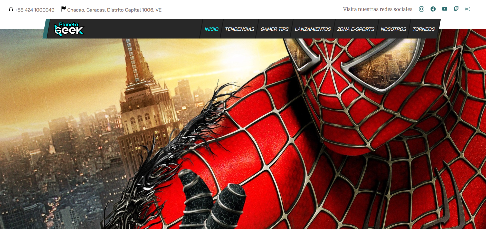
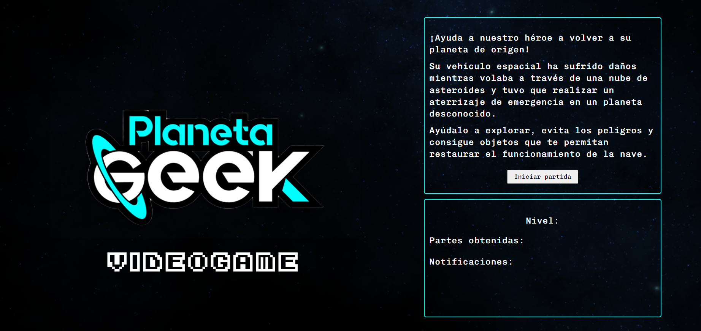

Mis Proyectos
Diseño de Revestidores
Esta aplicación permite diseñar todas las características de los revestidores a ser utilizados en pozos petroleros para cubrir el hoyo abierto en cada fase.
Partiendo desde el número de sartas a utilizar y sus profundidades de asentamiento, incluido un ajuste basado en condiciones críticas; seguido de la selección de diámetros y conexiones de cada sarta, pasando por el diseño de su peso nominal y grado de acero y finalmente representando todo lo obtenido en un diagrama mecánico.
Página Web para Programa de Televisión Venezolano
Planeta Geek. Excelente programa venezolano basado en Videojuegos, series y películas geek, amimmación japonesa y los e-sports.
El programa tiene fuerte presencia en Instagram, contando con una buena cantidad de fanáticos y seguidores, los cuales son complacidos semana a semana por el staff del programa.
Esta página web se crea como un reconocimiento al esfuerzo de los responsables, a la vez que aumenta su presencia en internet y otorga mayor profesionalismo al proyecto.
Aplicación de Videojuegos
Este proyecto fue construido como una Single-page application.
Se pone en práctica el consumo de una API, específicamente una basada en videojuegos, llamada RAWG (rawg.io).
Se añade la funcionalidad de realizar una búsqueda de juegos en la base de datos de dicha API e incluir cada juego en una de 3 categorías posibles: jugado (playED), jugando (playING) y por jugar (TOplay). También puede elminarse cualquier juego de cualquiera de las listas.
Además, haciendo clic sobre cualquier imagen de juego, se puede ir a una vista de detalles con información proveniente de la API.
Videojuego Planeta Geek
Basado en uno de mis hobbies, creé un videojuego corto, tipo RPG, con tan solo 3 niveles. Lo elaboré con la temática del programa de televisión que a menudo sigo.
Durante este proyecto pude poner en práctica ciertos procesos lógicos en JavaScript que en el desarrollo de ningún otro trabajo se me habían presentado, por ejemplo: establecer las superficies de contacto del personaje y el escenario; determinar la colisión entre personajes y objetos, así como las acciones que se derivan de éstas; renderizado simultáneo de varios elementos sobre el canvas, uso de las funciones setInterval() y setTimeout(), detección del evento de presionado de teclas y animaciones mediante “sprites”, entre muchos otros retos.
Generador de Recibos para Administrador de Condominio
Con el objetivo de resolver la necesidad de un administrador de condominio de casas, he creado una aplicación con la capacidad de importar un archivo excel, que debe contener la base de datos del administrador organizada de una forma preestablecida.
En base a esta data, la aplicación puede generar un archivo .pdf con la información del propietario que se elija, siendo capaz así de generar recibos de pago de manera automática, en lugar de generarlos a mano uno por uno (más de 100 propietarios) como lo hacía el Administrador antes de contar con la aplicación.
Aplicación web hecha con React para empresa de pastelería.
Esta aplicación fue hecha a la medida para los dueños de una empresa de pastelería.
Es utilizada por ellos diariamente para calcular y enviar los presupuestos de los pedidos que sus clientes solicitan.
La base de datos de los productos que la empresa ofrece es un array de objetos, la cual es manipulada según convenga para obtener los resultados requeridos.